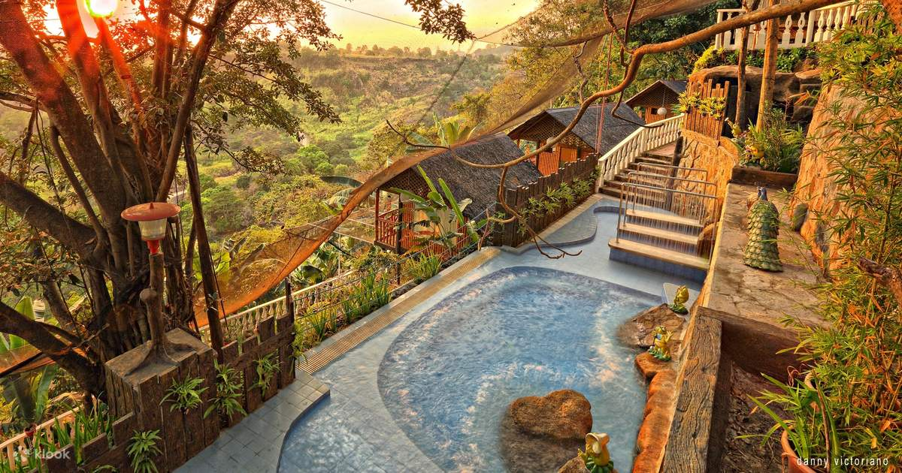
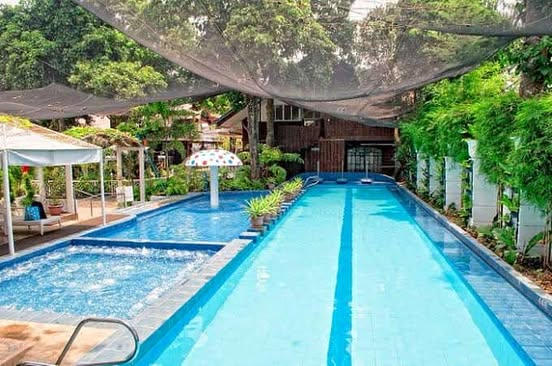

8. Luljetta's Place Garden Suites

Address: Sitio Loreland, San Roque, Antipolo, Rizal, Philippines, 1870
Price: Starts from Php 3,491.07/ Night (Economy Room - 1 Full Bed)
Luljetta's Place Garden Suites in Antipolo, Rizal, offers a blend of comfort and tranquillity perfect for families. Nestled amidst lush surroundings, the resort provides a range of family-friendly amenities, including a designated play area for kids and spacious suites for a cosy stay.
Guests can unwind with therapeutic spa treatments, enjoy refreshing dips in infinity pools with scenic views, and indulge in delightful meals at the on-site restaurant serving local and international cuisine. Whether exploring hiking trails or participating in organised activities, Luljetta's Place ensures a relaxing and enjoyable retreat for families seeking both relaxation and adventure.

Luljetta’s was inspired by the Albanian name Inspired by the Albanian female name which means, the flower of life.
In 2016, the Marinas family made their dream into reality of creating a place for guests to relax, unwind while enjoying the best of what nature has to offer. Nestled amidst garden groves and lush greenery, Luljetta’s offer a picturesque view of the mountains of Antipolo.